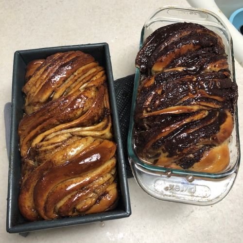

1 1/4 Rough Chopped Pecans (or more, measure with your heart)
1 (9 in) Unbaked Pie Crust
Preheat oven to 350 degrees.
In medium saucepan, combine brown sugar, corn syrup, butter, and cornstarch. Bring to a full boil and remove from heat.
In a large bowl, beat eggs until frothy. While whisking, slowly drizzle in about a cup of the sugar mixture (this is tempering the eggs, warming them so you don't get egg drop pecan pie.) Once combined, add the rest of your sugar mixture to the large bowl.
Add your salt, vanilla, and pecans.
Pour into your unbaked pie crust and bake for 40+ minutes. You want it to be set, but not burnt.
Allow to cool completely at room temp or fridge, then enjoy with a nice glass of milk!

Babka
Dough
3 1/3 cups Flour
1/2 cup Sugar
1 Tbs Instant Yeast
3/4 cup Warm Water (90-100 degrees)
3 Eggs
10 Tbs Room Temp Butter
3/4 tsp Salt
Chocolate Filling
1/2 cup Butter
4 oz Chocolate Chips
1/3 cup Cocoa Powder
1/3 cup Powdered Sugar
Cinnamon Filling
1/2 cup Brown Sugar
2 Tbs Cinnamon
1/2 cup Melted Butter
Simple Syrup
1/3 cup Water
1/3 cup Sugar
Combine water & yeast, set aside to bloom, 8-10 minutes.
Combine flour, sugar, and salt in a stand mixer with dough hook attached
With mixer on, add water mixture and eggs (eggs one at a time, waiting ~30 seconds between each egg).
Once combined, add the butter 1-2 tablespoons at a time, allowing to fully incorporate before each addition.
Place dough into an oiled bowl and chill in fridge overnight :(
1 Day Later...
Lightly butter 2 loaf pans, then dust with flour.
Make your fillings (aka mix ingredients together. Make both or two of the same, I don't care)
On a floured surface, cut dough in half and put one half back into the bowl, cover, and return to fridge.
Roll remaining half into a thin rectangle (dough thickness, not rectangle thickness).
Spread filling evenly all over the rectangle, leaving ~1 inch border on all sides.
Brush water on one of the longest sides and roll your dough up.
Slice your dough in half the long way (lengthwise, hot dog, whatever you want to call it) and "braid". Your dough will be sticky, but I believe in you.
Place into a loaf pan, covered, to rise for 1 1/2 - 2 hours. The dough will obviously be too long, so just kinda fold it over itself, but keep it looking nice.
Repeat with other loaf.
Bake for 25-30 minutes.
While baking, make a simple syrup with water and sugar. Mix and heat in small saucepan until sugar dissolves.
Once removing from the oven, immediately brush syrup over your loaves. USE ALL OF IT.